The Preview Window
The Preview window contains a preview of one or more reports, forms
or other printing where you have selected the Output to Preview
print option.
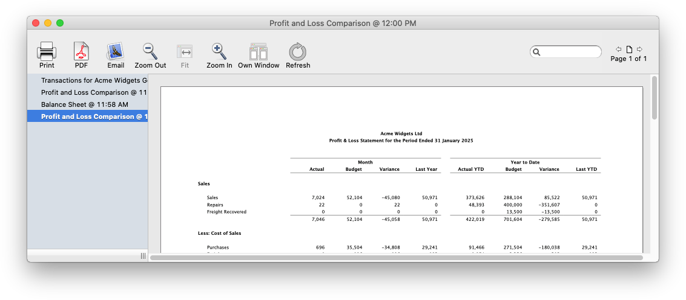
If the Preview window is left open, subsequent Previews will be
consolidated into it, each accessible by clicking on its time-stamped
name in the sidebar. Alternatively you can step through the reports
using the left or right arrow keys.
You can dismiss an individual preview by clicking on the Close icon
to the left of the name in the sidebar—this is only visible when the
mouse is directly over it.
If you want a preview to be in its own window, click the Own Window
toolbar icon. The currently viewed report will be detached from the
Preview window into a new Preview window, and the two windows will be
positioned next to each other so you can do side-by-side
comparisons.
Scrolling: You can scroll the previewed printout up
and down by using the vertical scroll bar, and left and right by using
the horizontal scroll bar at the bottom of the window. Alternatively use
the page-up, page-down, home, end and up and down arrow keys to scroll
through the window. The spacebar will take you to the top of the next
page (and shift-spacebar to the
Zooming: When you resize the Preview window, the
report will normally automatically scale to fit. You can manually zoom
in and out by using the two zoom controls (or Option-scrollwheel on Mac,
Ctrl-scrollwheel on Windows). To zoom in smaller increments, hold down
the shift key while zooming. Once a window has been manually zoomed, you
can drag the preview with the mouse to manually move it, and the preview
will no longer be automatically scaled when the window is resized. Click
the Fit toolbar icon to again automatically scale the preview to the
window.
Rerunning the Report: Many (but not all) previews
can be regenerated by simply clicking the Refresh button. The print
settings will be displayed for the report, and the report will appear as
a new view in the Preview window.
Searching: You can use the search box at the top
right of the Preview window to find any text in the report. Click in the
search box or press Ctrl-F/⌘-F to activate it and type the
top of the previous page).
text. The search will run as soon as you stop typing. The
Search box.
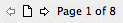
The page control arrows in
the toolbar also cause the report to scroll one page at a time. Clicking
on the Page icon between the arrows, displays the Go To
Page window, allowing you to go to a nominated page.
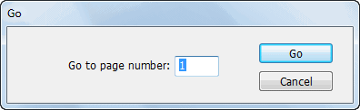
Type in the page number of the report and click the Go
button
Drill-down: Live drill down is available on many
reports. When
you move the cursor over a drill-down “hot spot”, the hot-
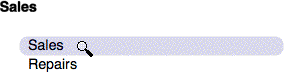
spot will highlight and the cursor will change to a
search is done character by character, so if a value in the report is
1,234.94 you need to enter 1,234.94 in the search box. All
occurrences of blocks of text containing entered text will be
highlighted. Pressing ↩︎/return will scroll to the next match.
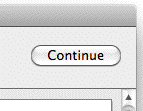
Copying a
Preview: You can copy the current page to the Clipboard as a
PDF (Mac) or EMF (Windows) by choosing Copy from the Edit menu. You will
be able to paste this picture in an application that supports graphics.
Use the Output to Clipboard option if you want to get the whole report
as text onto the clipboard.
Modal Preview Window: Certain preview windows (such
as the GST preview) are modal —you will not be able to do other
operations in MoneyWorks while these are open. These windows have a
Continue button, which must be clicked for you to proceed (the
report will still be visible in the Preview window).
Note: The Preview window will not close if you
manually close or disconnect from the MoneyWorks document (using the
File menu). However the
magnifying glass. Click to drill down.
Click to drill down when over a drill- down hot-spot.
names of existing previews in the sidebar will turn red, indicating
the report is from a previously accessed file.
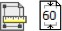
Changing the Margins and
Leading
The margins of a printout are the space around the edge of the paper
upon which no printing will be done. The amount of margin required
differs between printers. It is usually not possible to have no
margin.
Typing margin values
Type in the new values
for the margin
The size of the margin rectangle will alter.
The units of measurement are given in the Units pop-up menu,
and can be
The leading in a report is the amount of blank space between the
printed lines. MoneyWorks allows you to change the leading to make
reports easier to read.
To change the margins:
Click on the Margin Setup
button
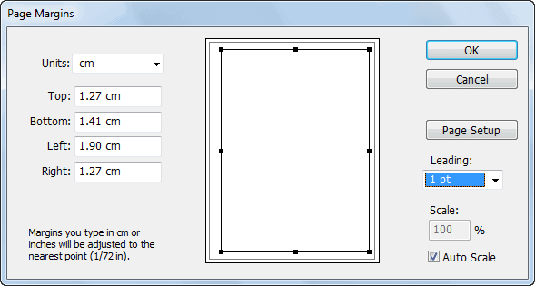
The Margins window will be
displayed.
The Margin Setup button for Mac (left) and Windows (right). In
Windows this shows the current scaling factor.
changed. Alternatively you can type the measurement followed by the
abbreviation for the measurement—“cm” for centimetres, “pts” for points,
“mm” for millimetres and “in” for inches.
MoneyWorks will not allow you to specify margins smaller than the
minimum that your printer is capable of.
Dragging the margin
rectangle
Drag one of the
handles on the margin rectangle
The readout numbers will change to reflect the new settings.
Click OK to
save the new margin settings
You can also change the page setup from within the margin setting
window by clicking the page setup icon.
Setting the Report Leading
This shows the current margin settings in the nominated units, and a
picture of the page. The dotted line represents the available print area
on the page, and the black line represents the current margin. The
margins can be altered by either typing in new values or adjusting the
size of the margin rectangle with the mouse.
Use the Leading pop-up menu to change the white space between the
lines on the reports. The higher the value, the more white space between
lines on the report, and the more spread out it will appear. Note that,
like the Auto-Scale option, this is a global setting for the machine,
and applies to all subsequently printed reports from that machine.
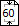
Setting the Scaling
Factor
Windows: You can specify the enlargement or
reduction for the report in the Margins window by typing the appropriate
scale factor into the Scale field. This scale factor used for the report
will be displayed on the Margin
Setup button. Note that you cannot change the scaling for forms (e.g.
Cheques, Envelopes and receipts).
Macintosh: Use the Scale field in the Page
Setup for the report to set the scaling (see the next section for
further details).
Auto-Scale
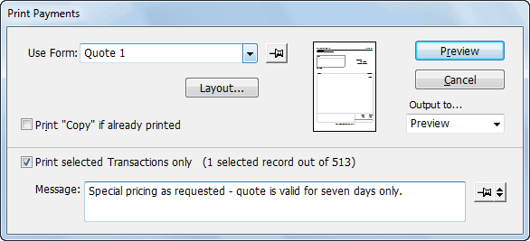
In Windows, the scaling
factor for report is displayed in the Margin Setup
button.
If this option is on, MoneyWorks will automatically scale the report
to fit to the selected page size. Thus it is possible to print a 15
column report in portrait, although the printing will be small. This is
set for each machine—turn it off and it is off for every MoneyWorks
report printed on that machine. When this option is off, reports that
are too wide are unceremoniously truncated.
Forms (invoices and statements, etc.) have different printing options
to other printouts. This is because they are graphical (as opposed to
textual) in nature—it is in fact this graphical nature which prevents
customisable forms (i.e. any form except the “Plain” ones) from being
emailed except as a pdf attachment.
Before you first print a particular form, you need to set the page
size and alignment on that page for your specific printer. Once you have
done the alignment, it will be remembered for that form (at least until
you again change printers).To check the alignment:
The Print Forms settings window will be displayed.
A thumbnail preview of the form (if available) will be displayed to
the right of the Use Form pop-up menu.
Click the Layout button
You only need to do this the first time a form is being printed, to
ensure it is correctly positioned for your printer.
The Form Layout window will open
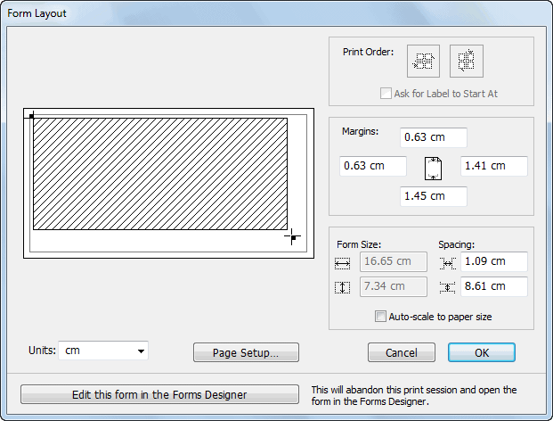
Click the
Page Setup button to specify the paper size
Your printer’s standard printer Page Setup dialog will open. Use this
to choose the paper size (e.g. A4) and orientation for the form.
If there is no shaded rectangle, it is because the paper size you
have selected is too small for the form you are using.
Click OK to save your settings
When you print a form, you have the chance to enter a new message or
to recall a previously saved message. If you enter a new message it will
not be used the next time you print the form unless you make it the
default message.
To set a default message:
Click the
Pin button to the right of the message text
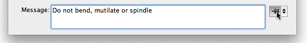
The Pin will highlight, indicating that this is the default
message.
To save a message:
The message pop-up menu will be displayed.
Choose Save This Message
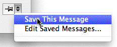
The message will be saved for
easy re-use.
To re-use a previously
saved message:
The message pop-up menu will be displayed.
Click the Pin button if you want this to become the default
message.
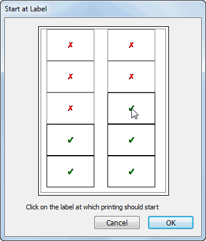
To edit a saved message:
Choose Edit Saved Messages from the Message
pop-up menu
A list of saved messages will be displayed. You can modify and delete
the messages in this list in the normal manner.
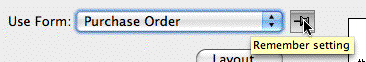
If you want the form you have
selected to be the default form (i.e. the one to use the next time you
print a form for this type of transaction):
The currently selected form in the Use Form list will be
made the default form, and will be selected automatically the next time
you print this type of transaction.
Choosing the start label
Click the Pin button to make the current form the default
form.
If you are printing labels and the form layout has the Ask for
Label to Start at
option set, you will be asked to specify the label at which to start
printing
Click on the label at which printing should
start
Printing Issues
The quality of the output that you will get from printing a
particular report or form may very depending on the platform and the
type of printer and printer driver you a using. Not all features are
supported on all printers—in particular older printers used on Windows
machines may not support all the graphics features, or may have
insufficient memory to correctly image the page.
When you design a report or a form, you can specify the font that you
want to use. If this report or form is then used on a different
computer, that font may not be present. In this case MoneyWorks will
warn you, and substitute an alternate font for the missing one at the
time of printing.
Note: To stop the missing font message being
displayed every time you print or preview the report or form, you should
open it and then save it —see Modifying an Existing
Report for reports, and Modifying
an Existing Form for forms).
Note: The fonts for any reports prepared on the
Datacentre server must be installed on the server (a substitution will
be made if the font is not present).
Using the Default Printer
on Windows
When you print a report or form on Windows, MoneyWorks remembers the
printer that it was output to, and will default to the printer the next
time you use the report or form. Thus packing slips can always be routed
to the warehouse printer, and cheques to the finance printer.
If you do not want this behaviour, you can turn it off by changing
the configuration in the Windows registry (using RegEdit). You may also
need to do this if a printer gets upgraded/replaced.
Start RegEdit on your
computer
Navigate to:
HKEY_CURRENT_USER\Software\Cognito\MoneyWorks Gold\Preferences
Change the useDefaultPrinter setting from 0 to
1
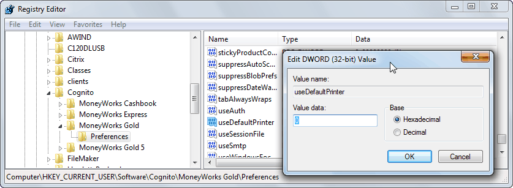
Change any other settings at your peril.
This only affects the computer on which the change is done.
Report doesn’t Print or
Preview
Sometimes due to incompatibilities between printer drivers
(especially on Windows), reports won’t print properly or at all. If this
happens try the Clear Print Settings button in the Diagnostics
.
Transactions
Entering and tracking transactions is done using the Transactions
list window. This gives access to all transactions stored in the
system.
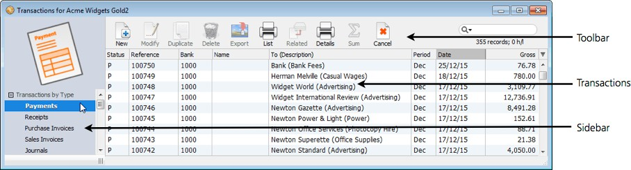
The transaction list is organised into different views, each
one displaying different
collections of transactions. The views are listed in the sidebar on the
left of the window1—clicking on one of these
will cause the transactions in that view to be displayed.
You can add
transactions to the list by clicking the New toolbar icon, or pressing
Ctrl-N/⌘-N. Where possible the new transaction will be the same type as
is natural to the current view in the list, but you can change the
transaction by using the Type pop-up
menu.
Tip: You can create a new transaction at almost any
time by pressing ⌘-option- N (Mac) or Ctrl-shift-N (Windows). The
proviso is that there must not be a modal window open (such as an alert
box or something like a bank reconciliation).
You can scroll through and manipulate the transactions in the list in
the normal manner —see Working with
Lists. For example use Page Up and Page Down
keys to scroll the list up and down a page at a time; use the
Home key to scroll to the top of the list; use the End
key to scroll to the bottom of the list.
Note: You can also view a list of the detail lines
that make up the transactions.
See Viewing Transaction
Lines.
Accessing and Viewing Transactions
To view the Transactions list:
Choose
Show>Transactions or press Ctrl-T/⌘-T
Some of the commands in the Navigator will also take you to this list
(normally in preparation for some further operation).
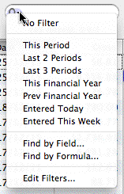
The left-arrow key moves to
the next view; right-arrow to the previous view.
Tip: Since you can have a lot of transactions (more
than seven years worth), you may wish to use the list filter to limit
the display. You can also create your own filters —see Creating Filters.
Tip: Press the esc key to return you to the view in
which you last highlighted a transaction.
Viewing Transaction Lines
A single transaction might be made up of one or more lines (termed
“Detail Lines”). When you look at the transaction list you see the
transaction header information, not the information on the detail lines
(double-clicking a transaction will show you these).
There is a separate list in MoneyWorks Gold that shows the details
lines (and associated transaction header information). To access this
list:
Chose
Show>Detail Line Items or press Ctrl-Shift-T/⌘-Option-T
The Detail Line Items list will be displayed.
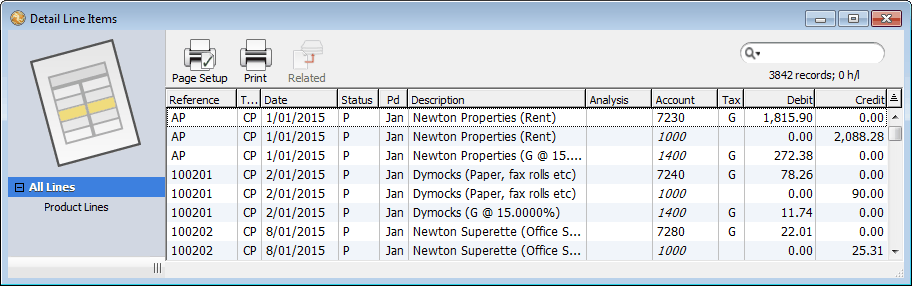
This shows every line of every transaction; system lines (which don’t
show in transactions) will have the account code displayed in
italics.
If you select the By Item view, only those lines that use
items will be displayed.
The list can be customised, sorted, printed etc. in the normal way
—see Working with Lists; double-clicking a line
will show the originating transaction.
The Transaction Entry
Window
Transactions are entered through the transaction entry window. For
non- journals, the window has the following general appearance (it will
vary slightly depending on the transaction type).
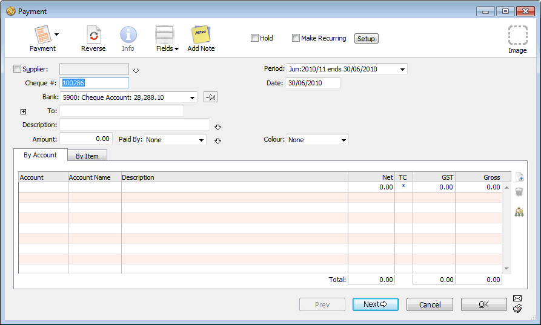
Transaction Toolbar
Along the top of each transaction window is the transaction
toolbar.
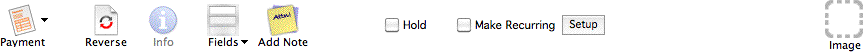
Transaction Type: A pop-up menu
allowing you to set the type of a transaction. If you change the type,
any existing information in the transaction will be discarded. You can
change the type by using a
keyboard shortcut. On the Mac press Shift-Ctrl-1 for Payment2, Shift-Ctrl-2 for Receipt etc. On Windows
press Shift-Alt-1, Shift-Alt-2 etc.
Reverse: Clicking on this will reverse the signs on
the transaction (so an invoice will become a credit note for example).
Click it again to reset the signs.
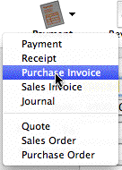
Use the Type menu to change the type of the transactions.
This should be done before entering any information.
Info: Click this to display the Get Info window on
the transaction. This window displays information about the transaction,
such as who entered it and when, the time posted, if the transaction has
been reconciled or (for invoices) paid.
 Fields: Clicking on the Fields
icon will display a pop-up menu that allows you to change the number of
entry fields in the transaction entry screen.
Fields: Clicking on the Fields
icon will display a pop-up menu that allows you to change the number of
entry fields in the transaction entry screen.
Simple: The minimum number of entry fields
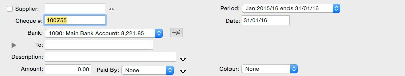
Show Analysis Fields: Shows the analysis, flag and
Salesperson fields
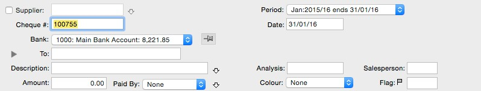
Show Some User
Fields: Shows the first three user fields.
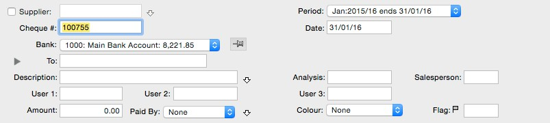
Show All User Fields: Shows all the available
fields.
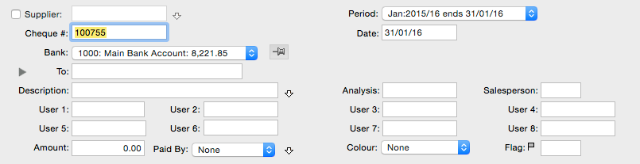
Add Note: Click this to add a Sticky Note to the transaction. The Note
will be displayed whenever the transaction is opened.
Hold: If the hold box is checked you will not be
able to post the transaction. Set this if you are unsure whether or not
the transaction is correct to avoid posting it incorrectly.
Make Recurring: Setting the Make Recurring
checkbox or clicking on the Setup button opens the recurring
transaction window, in which you can make a transaction into a recurring
transaction (i.e. one that will automatically self generate at future
points in time—see Recurring
Transactions. The recurring properties can be altered even
after the transaction has been posted.
Source Image icon: Used to add, view or delete a
source image for the transaction — see Storing
Source Images. This could be a scanned invoice, a photo or
whatever. Not available in MoneyWorks Cashbook.
Transaction Fields
Note that the behaviour of the fields can be modified by the use of
Custom Validations and other field attributes.
Transaction Date: The date on which the transaction
occurred. Changing this will change the period (see below), and also
affects the bank reconciliation and GST/VAT reporting (but not sales tax
reporting).
Period pop-up menu: The period menu is used to
determine what period the transaction will affect in the general ledger.
It contains a list of available periods (open and unlocked), and will
automatically change whenever the Transaction Date field is
altered to the period that corresponds to the date.
If for some reason you need to post a transaction into a period that
is different from its date, you can set the period using this pop-up
menu after entering the date into the Transaction Date field.
Analysis: The analysis field is used to tag a
transaction in any manner you choose (for example, a batch number, the
initials of whoever entered the transaction, some code that you can used
to analyse transactions). It can be up to 9 characters long, and can be
changed even after the transaction has been posted.
Salesperson: The Salesperson field can be used in a
similar manner to the analysis field, or in MoneyWorks Gold it can be
used to automatically assign a Department code to item transactions —see
The
Salesperson Field. The field can contain up to five characters
(the maximum length of a department code). If you type an “@” into this
field and press tab you will get the Department Choices list.
Flag: The flag field is used as a reminder field for
the operator, and can contain up to five characters. Transactions with
a
Description: This contains details of what the
transaction was for, and is appended to the ToFrom field (in
parentheses) in the Transaction List window. It can contain up to 1000
characters. You may want to put a short memo here for your own
edification, or, for invoices, you may want to use this field to
describe in detail the services rendered and have it appear on the
invoice. The field can be altered after posting.
Amount: The total amount (Tax inclusive) of the
transaction. The total of the gross column in the details lines must
match this before the transaction can be accepted.
In some types of transaction (preparing a sales invoice for example)
you will not necessarily know the total amount of the transaction until
after all the detail lines are entered. MoneyWorks will normally
automatically calculate the transaction Amount for sales for you. You
can change this behaviour for a particular transaction type by setting
the Auto-Calculate Transaction
Total options in the Document preferences.
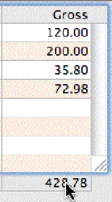
Tip: Click
on the total of the detail lines (at the bottom of the
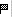
non-empty flag field are
identified in transaction lists by a flag symbol in the Status column.
The flag field can be changed even after the transaction has been
posted.
Colour: Use the colour pop-up menu to set the colour
of the transaction. How the colour option is used is up to
Transactions whose flag field is non- empty are identified by a flag
in the transaction list.
Gross column) to transfer this amount into the Amount field.
Note: If you have entered a code into the
transaction’s Name field (Supplier, Creditor etc.), and if that
Name has a Default Allocation
associated with it, the allocation on the
you—you might have all purchase orders in green, overdue accounts in
red and so forth. The colour can be changed even after the transaction
has been posted. You can also use the Set Colour command in the
Commands menu to change the colour for a set of highlighted
transactions. The colour names can be changed in the Document Preferences.
detail lines will automatically alter whenever you change the Amount
field.
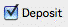
Deposit: The
deposit is for invoices and orders only. Check the deposit box if a
deposit is being made. Invoices with
User1, User2, ... User8: These fields are available
for your own use. They can be relabelled (in the Document
Preferences—see Fields), and can be
altered after posting.
To or
From: The To field contains information about who the
transaction was made out to. In receipts and creditor invoices, the
field is labelled From3.
deposits will be posted automatically and you will be prompted for
the details of the deposit, including the amount and the bank
account—see Receiving a Deposit.
Set the deposit option to record a deposit made on a debtor invoice
or order.
This field is displayed in the Transaction list, with the transaction
Description field appended in parentheses.
Paid By: For receipts and payments only, set the
pop-up menu
to the type of receipt (or payment) made—cash, cheque, credit card
etc. Cash transactions are totalled and do not appear individually on
the bank deposit slip—see The
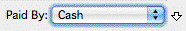
Set the receipt or payment type in
Banking Command. The payment
method names can be changed in the Document
Preferences.
Post and Print
Options: You can set the transaction to be automatically posted
on completion by clicking the post icon. When you click on this, a post
icon (small envelope) appears on the Next, Previous
and OK buttons. If you click on the icon again, the option will
be turned off and the transaction will not be posted (the icons will
disappear off the buttons). See Posting Transactions.
If you click on the Printer icon, a print icon will be displayed on
the Next, Previous and OK buttons and the transaction will be printed
(using the nominated form) when it is accepted. See printing
transactions using forms. Clicking the print icon again will turn off the
option.
the Paid By pop-up menu.
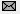
The transaction will be automatically posted if the post option is
set.
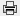
The transaction will be automatically printed if the print option
is set.
Entering a Transaction
New transactions can be entered either through the Transactions list
window or through the Navigator.
Note: Transaction entry is non-modal, allowing you
to have several transaction entry windows open simultaneously. It is up
to you to manage this—prior to MoneyWorks 6, only one transaction window
at a time could be open.
New Transactions in the
List Window
To enter a new transaction through the Transactions list window, it
must be front-most.
Choose Edit >New <Transaction>4 or press Ctrl-N/⌘-N or click the
New
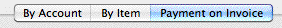
When
entering more than one transaction, turning these options on will cause
only that transaction to be posted/processed or printed. The option will
be reset when you accept the transaction. To make an option stay on,
double-click the icon—it will go black. Clicking it again will turn it
off.
by Account/By Item/Payment
on Invoice:
Set the tab to specify whether the transaction is to be coded
to the general ledger, or is for an item, and hence what information
can be entered into the detail lines. The Payment on Invoice
tab (not available in MoneyWorks Cashbook) is only available if you have
entered a debtor/creditor code into the customer/supplier field.
Detail Lines: The detail lines contain information
about the allocation of the
A new transaction entry
window will open. The type of transaction is determined by the current
tab in the transaction list. If it cannot be determined it will default
to Receipt.
Note that changing the type of transaction will clear the transaction
of any information you may have entered.
The transaction entry window of the nominated type will be
displayed.
transaction Amount to the different accounts or items. At
least one detail line must be completed for each transaction—see Entering Detail Lines.